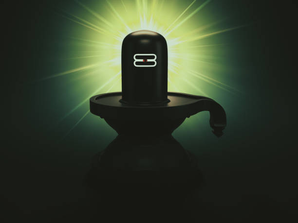

Health Astrology

Health Astrology: Understanding the Connection Between Astrology and Well-being
Health astrology, also known as medical astrology, is a branch of astrology that uses a person's horoscope to identify areas of the body that may be predisposed to health issues, as well as to suggest potential treatments. It helps to understand how the alignment of celestial bodies influences our physical health and vitality.
In medical astrology, each zodiac sign is linked to specific parts of the body. The signs' positions within the zodiac wheel govern the anatomical areas they represent. Understanding this connection can provide insights into potential health weaknesses, allowing for preventative measures and holistic treatments.
Key Factors in Health Astrology
- Sixth House and its Ruler: The sixth house in the natal chart is directly associated with health and wellness. The condition of the planets placed in this house, as well as the planet ruling it, plays a crucial role in determining one's overall health.
- The Ascendant and its Ruler: The ascendant (or rising sign) and its ruling planet also have a significant influence on the individual's constitution and physical well-being.
- The Sun and Moon: Both the Sun and the Moon’s placements reveal insights into vital aspects of health. The Sun represents vitality and the heart, while the Moon governs fluids and emotional well-being.
- Saturn and Mars: Saturn often indicates chronic or long-term health conditions, while Mars is related to acute or sudden illnesses and injuries. The condition of these planets in the birth chart can provide valuable clues for addressing specific health concerns
- The Decumbiture Chart: This is a specialized horary chart used to analyze health conditions and diagnose ailments astrologically. By analyzing this chart, astrologers can gain deeper insights into an individual’s health status.
Astrological Remedies for Health Issues
- Surya Namaskar (Sun Salutation)
A powerful yoga sequence that honors the Sun, symbolizing vitality and life force. The twelve postures involved help stretch, energize, and balance the body, improving flexibility, circulation, and overall physical health. - Color Therapy
Colors significantly affect our mood and well-being. By incorporating specific colors into your surroundings, clothing, or daily routine, you can influence your emotional state and physical health. For instance, green promotes healing, blue calms the mind, and red energizes the body. - Meditation and Mindfulness
Practicing meditation can alleviate stress, anxiety, and negative thought patterns. Spending a few minutes each day focusing on your breath and calming your mind can improve mental clarity, reduce stress, and enhance emotional and physical health. - Herbal Remedies
Traditional herbal remedies have been used for centuries to support health. Herbs like ginger aid digestion, chamomile promotes relaxation, and peppermint helps relieve headaches. Incorporating these herbs into your diet or as teas can offer natural healing benefits. - Chanting Planetary Mantras
Chanting specific planetary mantras or affirmations can align your energy with the beneficial influences of planets. These practices help bring balance to your health and well-being, especially when combined with other holistic therapies.
The Role of Astrology in Holistic Health
While conventional healthcare practices are vital for treating health issues, astrological remedies can complement medical treatments by promoting balance and harmony in the body and mind. Using astrology as part of a broader wellness routine can enhance your health, vitality, and overall well-being.
Consistency and intention are key when it comes to practicing astrological remedies. By integrating yoga, color therapy, herbal treatments, meditation, and planetary mantras, you can create a holistic health plan tailored to your unique astrological profile.
Embrace the wisdom of astrology to support your health journey and achieve greater harmony in your life.